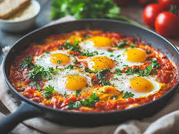

Shakshuka

Lecker und einfach
Vorbereitung: 10 Minuten - Zubereitung 20 Minuten
Zutaten:
- Dosentomaten
- Zwiebeln
- Paprika
- Eier
- Schafskäse
- Kichererbsen
- Gewürze
Schritte:
- Zwiebeln, Paprika und Kichererbsen in der Pfanne rösten.
- Gewürze und Dosentomaten hinzufügen.
- Schafskäse hinzugeben.
- Eier reinschlagen und stocken lassen.